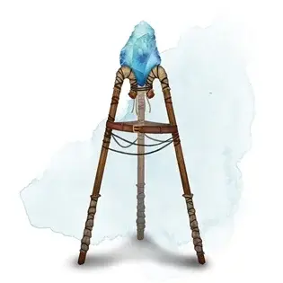

Камень сияния
Gem of Brightness
Чудесный предмет, необычный

Рекомендованная стоимость 101-500 зм
У этой призмы есть 50 зарядов. Если вы её держите, вы можете действием произнести одно из трёх командных слов, чтобы вызвать один из следующих эффектов:
- Первое командное слово заставляет камень испускать яркий свет в радиусе 30 футов и тусклый свет в радиусе ещё 30 футов. Этот эффект не тратит заряд. Он длится, пока вы не повторите командное слово бонусным действием, или пока не воспользуетесь другой функцией камня.
- Второе командное слово тратит 1 заряд и заставляет камень испустить сверкающий луч в одно существо, которое вы видите в пределах 60 футов. Существо должно преуспеть в спасброске Телосложения Сл 15, иначе станет ослеплённым на 1 минуту. Существо может повторять спасбросок в конце каждого своего хода, оканчивая эффект при успехе.
- Третье командное слово тратит 5 зарядов и заставляет камень испускать ослепляющий свет 30-футовым конусом. Все существа в конусе должны совершить спасброски, как если бы по ним попал луч, созданный вторым командным словом.
Когда все заряды этого камня кончатся, он становится немагической драгоценностью, стоящей 50 зм.